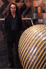
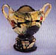

Articles ClayFeast
Gulgong, Australia
To this end, Mansfield has invited 13 master-artists from around the world to come to Gulgong, a town on the central tablelands of NSW, Australia, to work with potters, to talk and eat, look at ways we can enjoy the life of potters in the best way possible. The success of previous events could mean that an excess of 350 people could converge on this small town, bringing their work with them, meeting others with similar purposes: teachers, students, full-time potters, part-time potters, appreciators of the potter’s art. There will be demonstrations and lectures each day, hands-on decorating of the participants’ own work, firing the woodfired ‘merry-go-round’ kiln, exhibitions, happenings, and a few surprises as well. Each participant is invited to bring six pieces of tableware for a mammoth display in the Memorial Hall. They anticipate they will show thousands of pots on the theme of feasting. The masters leading the demonstrations will hold an exhibition of their work and, in addition, be on hand to supervise the participants decorating their own pieces to be fired with the involvement of everyone at Mansfield’s Morning View studio. John Gibson, author of the book, Pottery Decoration, and head of ceramics at the new school for ceramics and glass in Bornholm, Denmark, will lead a forum, in conjunction with Janet DeBoos, head of the ceramics department at the Canberra School of Art, for teachers and students. The town of Gulgong will host displays of pots in the shop windows and we plan a number of events that will involve active participation and discussion. Next page > Invited Master Ceramists> Page 2
|
|
| © Ceramics Today |